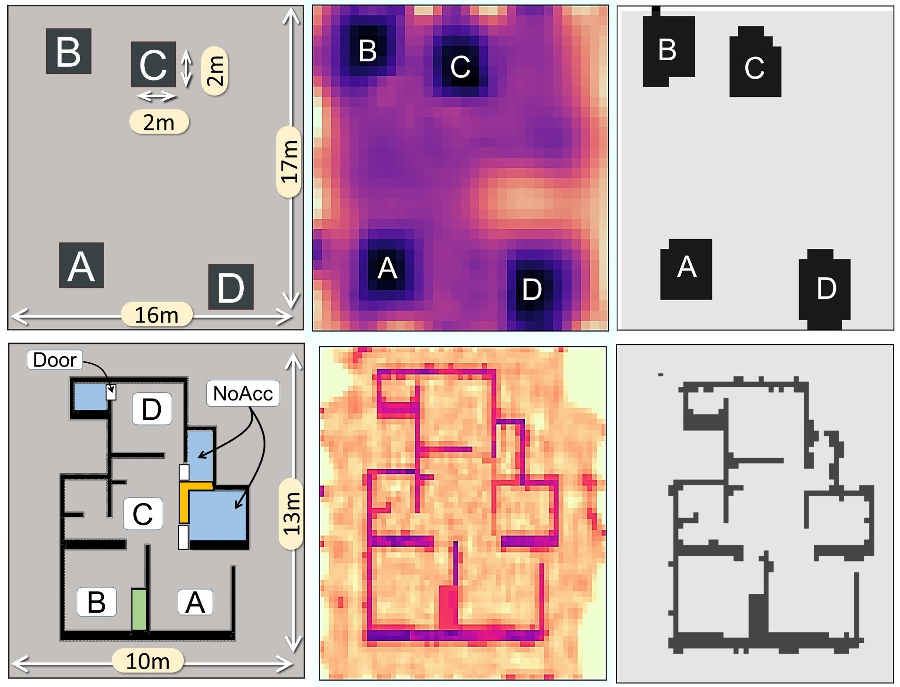

|
Amartya Basu
I'm an incoming PhD student at the department of Computer Science at Stony Brook University, New York, USA. I completed my MS by Research in Computer Science and
Engineering (advisor: Dr. Ayon Chakraborty) from the Indian Institute of Technology (IIT) Madras, India. During my MS, I was awarded the prestigious
Institute Research Award in MS category and the Research Excellence Award. |

|
ResearchMy research interests lie in the broad field of IoT, with a particular focus on sensing and mobile systems. My work is largely interdisciplinary, encompassing deep learning, system design, and embedded AI to build intelligent systems that address real-world challenges. |
|  |
Ubiquitous Indoor Mapping using Mobile Radio Tomography
, Ayon Chakraborty, Kush Jajal IEEE Transactions on Mobile Computing (TMC), Vol.23, No.12, 2024 paper / bibtex Press: Time of India, Hindustan Times, The Hindu |

|
SpecNeRF: Neural Radiance Field Driven Wireless Coverage Mapping for 5G Networks
, Ayon Chakraborty AIoT Workshop In con-juntion with ACM MobiHoc, 2024 paper / bibtex |
Patents |
|
A System and Method for Mapping Indoor Spaces in Real-Time
Ayon Chakraborty, Amartya Basu India Patent: 567451, 2025 |
Service |
|
Journal Reviewer- IEEE Transactions on Mobile Computing, Elsevier Adhoc Networks. Artifact Reviewer- CoNEXT 2025, MobiSys2025, SenSys 2024. Web Chair- ICDCN 2025. |
|
|